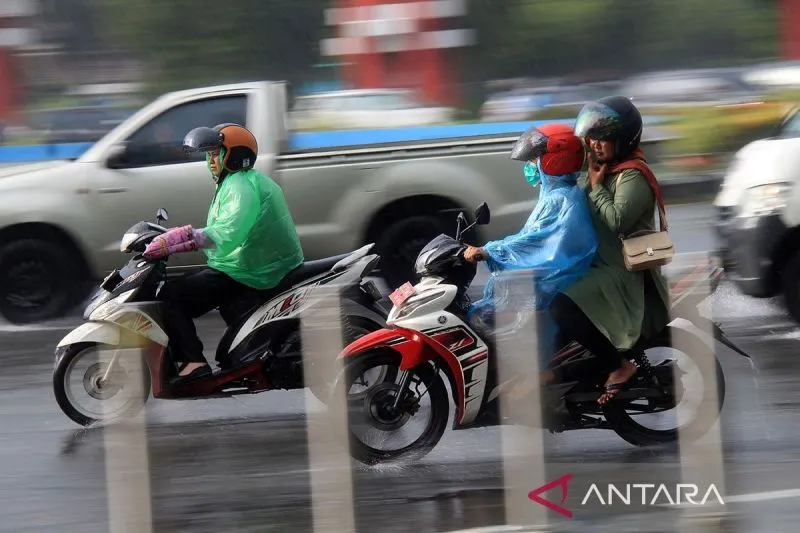

Berita 1 |
|
|
Jakarta (ANTARA) - Badan Meteorologi, Klimatologi, dan Geofisika (BMKG) memprakirakan bahwa hujan ringan akan mendominasi sejumlah wilayah di tanah air pada Minggu. Prakirawan BMKG Afif dalam tayangan prakiraan cuaca yang dipantau di Jakarta, Minggu pagi, menyampaikan bahwa hujan ringan berpotensi terjadi di sejumlah kota di Pulau Sumatera, yakni Banda Aceh, Medan, Padang, Pekanbaru, Tanjung Pinang, Bengkulu, dan Bandar Lampung. "Terdapat potensi hujan ringan di Banda Aceh, kemudian Medan, Padang, Pekanbaru, Tanjung Pinang, Bengkulu, dan Bandar Lampung," ujar Afif.  Selain itu, hujan ringan juga diprakirakan terjadi di Palangkaraya dan Tanjung Selor. Kemudian, di wilayah Indonesia bagian timur, hujan ringan berpotensi terjadi di Sorong, Manokwari, Nabire, Jayapura, dan Jayawijaya. "Bergeser ke Pulau Jawa, Bali, dan Nusa Tenggara, terdapat potensi hujan ringan di Serang dan Bandung," ujar dia. Selanjutnya, di Pulau Sulawesi, hujan ringan berpotensi terjadi di Mamuju dan Palu. Selain hujan ringan, terdapat potensi hujan petir di Pontianak. Kondisi cuaca lainnya adalah cerah berawan hingga berawan yang diprakirakan terjadi di Makassar, Kendari, Gorontalo, dan Manado. |
|
| BMKG Prakirakan Hujan Ringan di Sejumlah Wilayah Indonesia | |